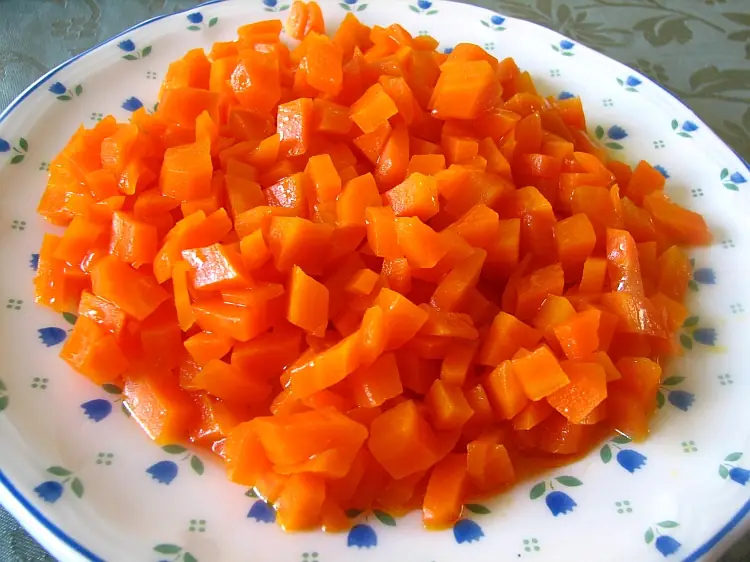

Фото: Gilabrand (talk), CC BY-SA 3.0

Цимес морковный
Тушёная морковь с черносливом и мёдом, сладкий гарнир к праздничному столу
60 мин4 порц.190 ккал на порциюБ 3 · Ж 5 · У 33Еврейская кухня
Продукты на 4 порц.
- Морковь6 шт
- Чернослив100 г
- Курага по желанию60 г
- Мёд2 ст. л.
- Растительное масло2 ст. л.
- Лимон0,25 шт
- Корица1 щеп.
- Соль1 щеп.
- Вода1 стак.
Как готовить
- Морковь очистите и нарежьте кружками толщиной 5 мм.
- Чернослив и курагу промойте, крупные ягоды разрежьте пополам.
- В сотейнике разогрейте масло, выложите морковь, залейте водой и доведите до кипения на среднем огне.
- Добавьте сухофрукты, мёд, корицу и соль. Накройте крышкой и тушите на слабом огне 35-40 минут, иногда помешивая.
- Снимите крышку, добавьте сок лимона и уварите жидкость 5-10 минут до густого блестящего соуса. Морковь должна стать мягкой.
Совет. Не мешайте слишком часто, чтобы морковь не превратилась в пюре. На Песах подходит, в рецепте нет муки.